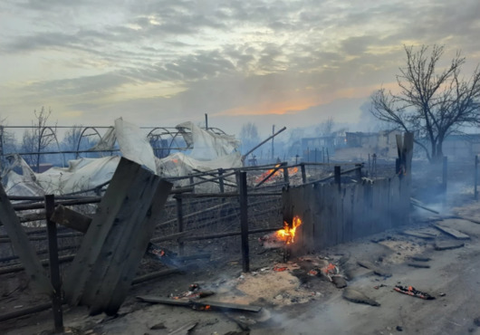

Благотворительный фонд "Природа" - Внеси свой вклад в улучшение экологии в своём городе
Пожар тушат почти 300 человек. На трассе сильное задымление

В Кургане сейчас бушует мощнейший пожар в СНТ «Малиновка».
По последним данным ГУ МЧС по Курганской области,
горят 50 дачных участков на общей площади 5000 квадратных метров.
Из СНТ и прилегающих территорий эвакуированы 500 человек (размещены у родственников).
В настоящее время сотрудники МЧС России защищают от огня более 500 дачных домов.
— Сотрудники Госавтоинспекции несут усиленный режим службы в местах возгораний,
обеспечивая беспрепятственный проезд специализированной техники и безопасность всех участников движения.
В настоящее время на задымленном участке пути от 354-го до 356-го километра
автомобильной дороги Екатеринбург — Шадринск — Курган
(от кольца в Кургане в направлении станции Просвет) экипажи ДПС несут усиленный режим службы.
Формируются колонны по десять автомобилей,
которые в сопровождении полицейских в реверсивном порядке преодолевают опасный участок пути, — рассказали в ведомстве.